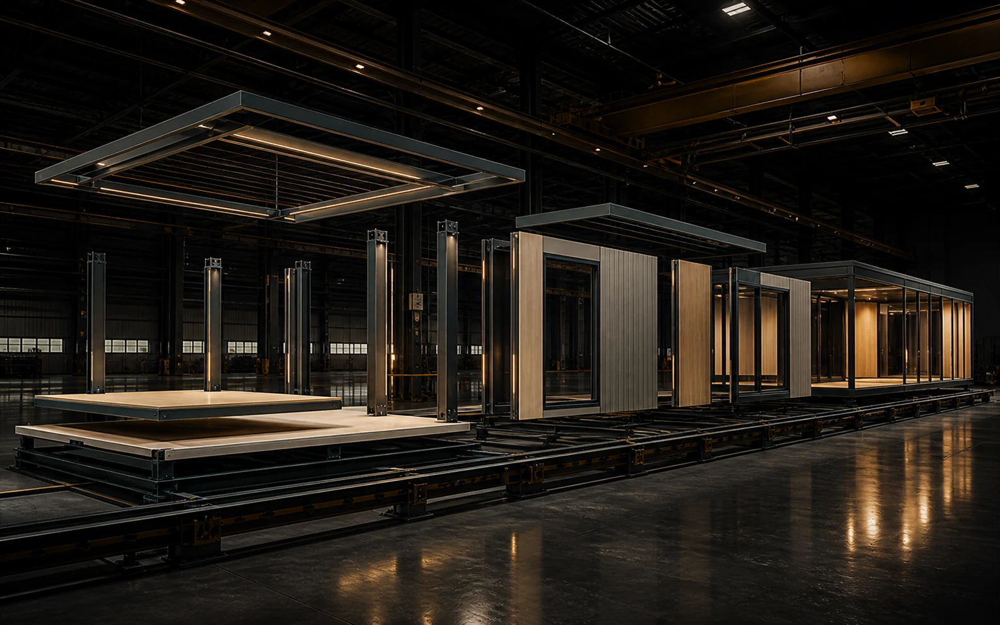
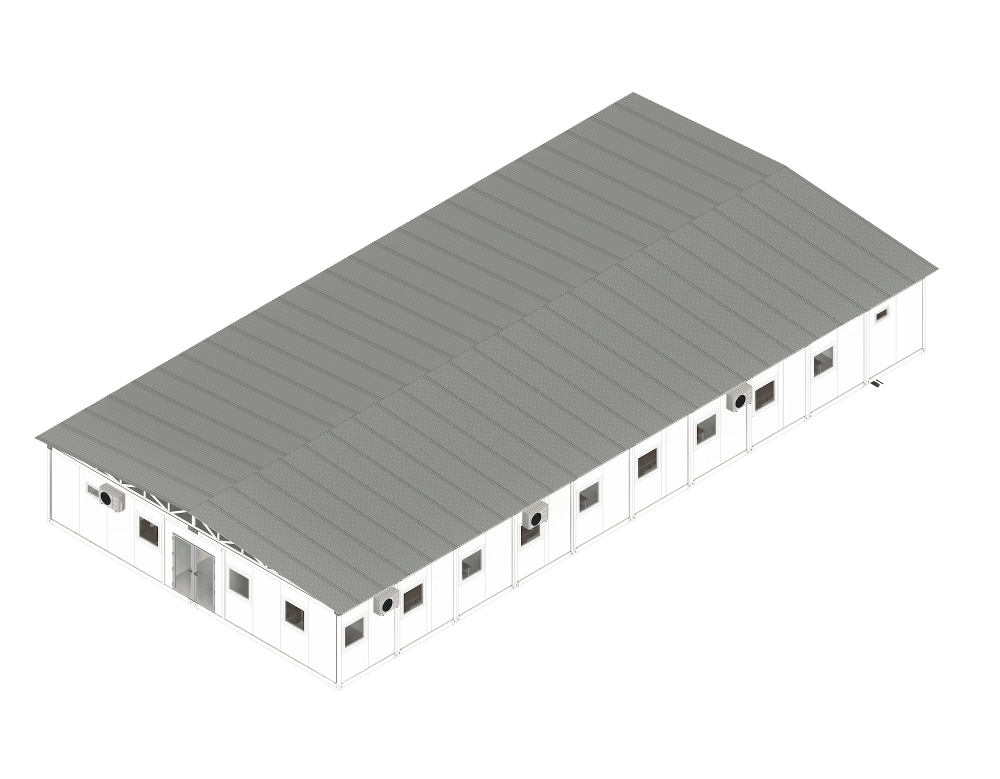
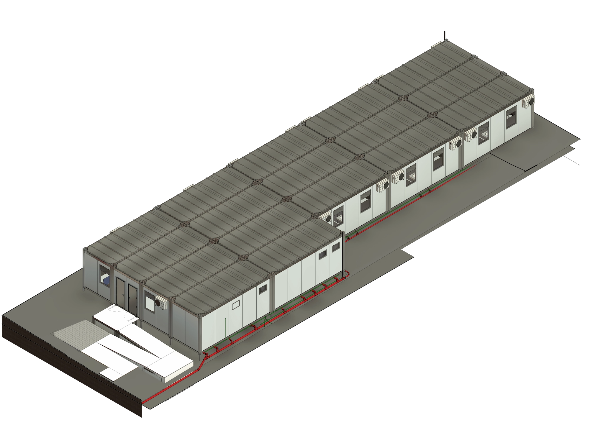
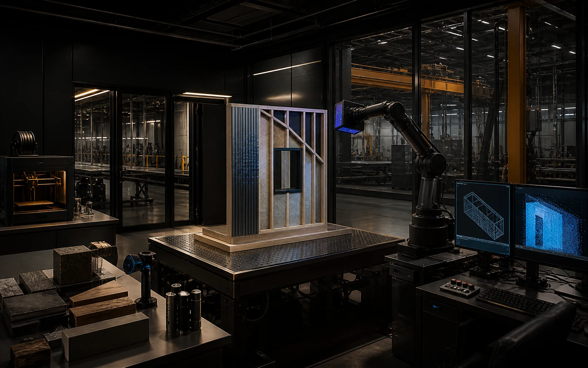

Un modelo coordinado puede ser documentación, sistema, catálogo, presupuesto, interfaz y producto.
Trabajamos desde el núcleo BIM para conectar decisiones de diseño con construcción, industrialización y comunicación. La información no acompaña al proyecto: forma parte de su arquitectura.
MODEL / 01
Geometría precisa y coordinada.
DATA / 02
Información útil para decidir.
SYSTEM / 03
Reglas preparadas para fabricar.
EXPERIENCE / 04
Modelos convertidos en herramientas.
02 / CAPABILITIES
Tres capacidades. Un mismo modelo.
MODELLWERK interviene donde el modelo necesita ganar precisión, transformarse en sistema o convertirse en una experiencia digital.
Modelamos, coordinamos y documentamos arquitectura, estructuras y MEP con la profundidad necesaria para tomar decisiones, medir, fabricar y ejecutar.
Modelado BIMCoordinaciónDocumentación ejecutivaLOD 300–400Familias y bibliotecasCómputos y parámetrosQA / QCOpenBIM / IFC
MODEL / COORDINATION / DATALOD / 300–400

SYSTEM / DFMA / ASSEMBLYBOM / FABRICATION
04 / MW / SYSTEMS
Del proyecto al sistema.
Del modelo a la fábrica.
Convertimos criterios de proyecto en componentes repetibles, familias paramétricas, documentación de fabricación y secuencias de montaje preparadas para industrializar.
El módulo MW50 es el caso de prueba: un modelo BIM convertido en una experiencia web interactiva. La tecnología y el pipeline son transferibles a modelos de clientes.
Tipologías, componentes y reglas orientadas a repetición, coordinación y montaje.

FILE / OPERATIONSDISCIPLINE / BIMSTATUS / ARCHIVE
Operación remota
Espacios técnicos coordinados para logística, instalación y uso en contextos exigentes.

FILE / URBANDISCIPLINE / MODELSTATUS / ARCHIVE
Modelos urbanos
Información coordinada para comprender conjuntos, etapas y relaciones de escala.
08 / MW / LAB
Research / build / test

PROTOTYPE / SCAN / AUTOMATION
Laboratorio interno para investigar automatización, inteligencia artificial, WebGL, Blender, nuevos pipelines BIM→Web, XR y Digital Twins sin convertir cada prueba en una promesa comercial.
AutomationThree.jsBlenderBIM → WebXRDigital Twins
¿Qué puede hacer tu modelo?
Conversemos sobre cómo transformar información BIM en documentación, sistemas constructivos o productos digitales que mejoren decisiones reales.

 MW / CONFIGURE · VISOR 1.0
MW / CONFIGURE · VISOR 1.0